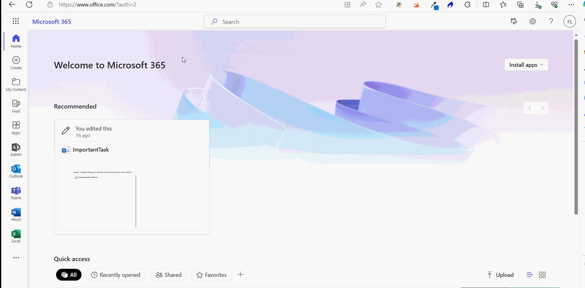
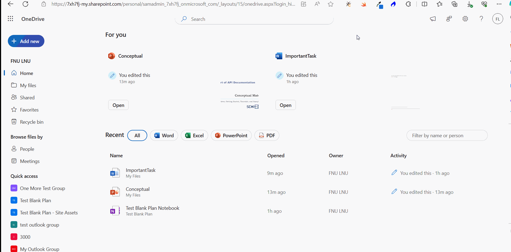
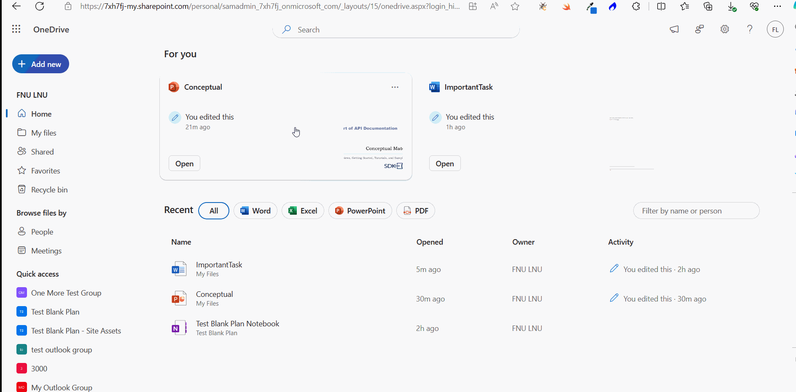
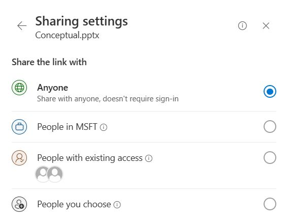
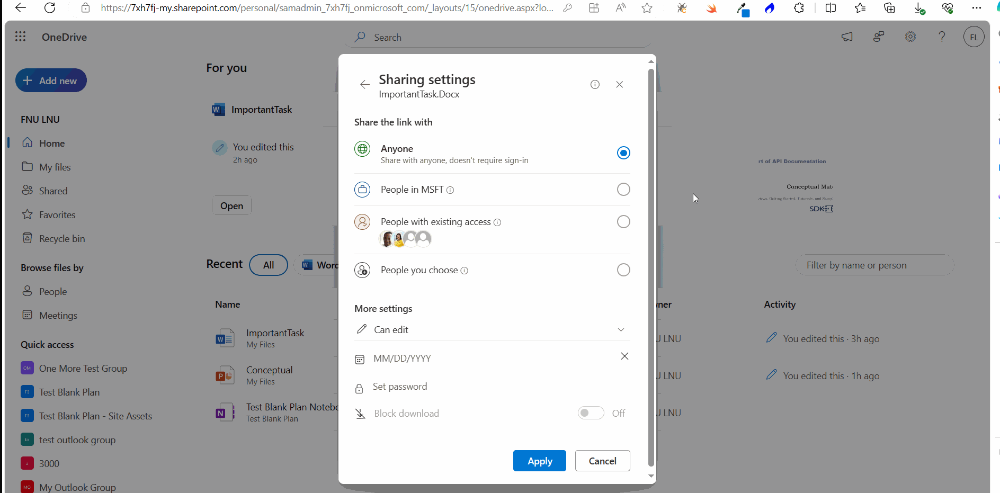
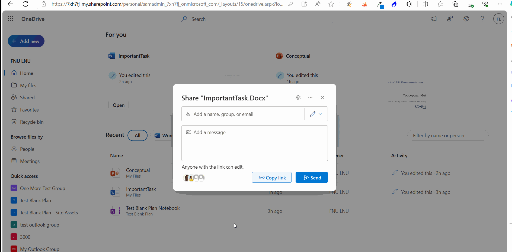

How to Share Files in Microsoft 365?
Note: Most of the images contained within this article are gifs. Click them to understand Microsoft 365 file sharing better.
Microsoft 365 lets you share files through Groups and Teams. But what if you have to share files with external users? Both within and outside of the organization? This article explains how you can share files with outsiders through emails and as links.
Note: You should have the rights or permission to share files with people outside of your organization. This can be granted to you only by your Microsoft 365 Administrator.
Note: You should be using OneDrive cloud and have it synced with your OneDrive desktop app (if you are using one). Only then you can share the latest version of your files.
Access Files from OneDrive
All the files you upload to Microsoft 365 – be it in Teams, SharePoint or any other app – gets stored in your personal One Drive app. You can access OneDrive from the Microsoft 365 App Launcher.

Sharing Files as Emails from OneDrive
To share files as emails, do the following.
- Click the Share icon. The share file box opens up.
- Enter the recipient email address. Add a message regarding the file you are sharing.
- Select the file permission.
- Click the Send button.

Sharing Files as Links from OneDrive
To share files as links, do the following.
- Click the Share icon. The share file box opens up.
- Select the file permission.
- Click the Copy link button.
- Use the link to share the file.

Modifying the Sharing Settings
You can modify the file’s share settings by clicking the Settings icon.
You have the following options that can help secure your file by regulating access to it.
Share the link with
- Anyone – anyone can access the link. This is usually not recommended and therefore will be available to you only if the administrator has granted you the access
- People in MSFT – anyone within the MSFT community with an organization account can access the link.
- People with existing access – useful if you want to reshare an updated version of the document with people who already have access.
- People you choose – useful if you want to share your file only with specific people inside or outside of the MSFT community.

More Settings
- Grant file access permission – file permissions like edit, view or review can be assigned from here too.
- Select file link expiry date – allows you to select the date at which the shared link expires.
- Set password – allows you to add password protection to the shared link.
- Block download – allows you to prevent file downloads (available only for ‘view only’ permission, as editing/reviewing actions require the file to be downloaded or modified).

Managing Shared Access
You can also modify or edit the access permissions granted to users using the manage access option. Follow these instructions to modify access permissions of users who already have access to your shared link.
- Click the users icon. The Manage Access box opens up.
- Click the access permission assigned to the user.
- Select the required permission to be assigned from the Direct Access dropdown.
- Click the Apply button to save the changes.
Stop Sharing
You can also stop sharing the link to your file – if you are no longer required to share the file or accidentally shared the wrong file - by selecting the Stop Sharing option from Manage Access box.
